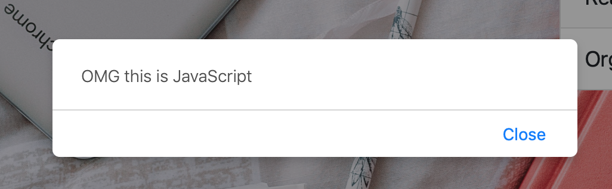

Part 0 - Jump in & Build
Part 1 - Foundations
- 4 - Variables
- 5 - Operators
- 6 - Functions
- 7 - Conditional Statements
- 8 - Arrays
- 9 - Loops
- 10 - Exercise: FizzBuzz
- 11 - Congratulations
Part 2 - The Browser
Useful Links
Step 2 - Adding some JavaScript
There are two different ways to add Javascript to a page. The first way is to put your Javascript inside a <script> tag.
Javascript in my Head
Edit index.html and update the <head> element to include a new <script> element like this:
<head>
<!-- Bootstrap template code you pasted earlier -->
<script>
console.log("OMG this is JavaScript");
</script>
</head>
Save this, refresh your page and nothing should look different.
But if you open your Dev Tools and look at the Console, you will see the message OMG this is JavaScript.
When your browser loads a page, it starts at the first tag and works through the whole document displaying it as it goes. When your browser encounters a <script> tag, it stops and runs that code before continuing to displaying the rest of the page.
So what does console.log() do exactly?
console.log()
console.log() tells the browser to display messages and other information in the Dev Tools console. We call these ‘console’ or ‘log’ messages, and they only appear in the Dev Tools Console. Anyone interacting with your webpage isn’t going to see them unless they open the Dev Tools Console.
console.log() is for you (the developer) to use when debugging. That is when you trying to figure out why something isn’t working as you expected it to. It’s also common to use it when you are learning a new thing. You can use console.log() to display error & status messages or anything else which you think might help you.
alert()
Enough with the Console for a bit, what about something a user could actually see.
Javascript Alert!
Edit the page again and replace the console.log line with:
alert('Hello there!');
Save and refresh the page, and a small window will popup in your browser with the text ‘Hello there!’ in it.

External Javascript files.
We said earlier that there are two ways to bring JavaScript in using a <script> tag.
The other way is to use <script> to load JavaScript from another file into this page.
You do this by putting the Javascript in a different file, and then using the src attribute to specify that file as the script source.
Hook up some Javascript
Make sure that there is no Javascript in your main HTML page.
Refresh the page and check there is no Javascript alert, and also check the console to make sure there’s no messages there either. Now we are going to add an alert in our seperate script file.
Open up the file script.js in your Glitch. Add the following code:
alert('Hello there!');
Refresh the page. Nothing happens! Its because we don’t have the script file hooked up to our HTML anymore.
When we pasted in the Bootstrap template we over-wrote that. So add the following lines:
<!-- import the webpage's javascript file -->
<script src="/script.js" defer></script>
Note the comment line above the HTML code. We add that to explain to our later selves what this code was doing.
Try refreshing now - you should get your alert.
Hook up some CSS
While you’re on the job, lets give our page a cool title so it appears in your browser tabs and also connect up the Cascading style sheets that Glitch gave us - we’ll need those too. Add the following lines.
<link rel="stylesheet" href="style.css" />
<title>Awesome To Do List</title>
Hiding, Showing and Modifying HTML
Javascript has the power to modify the appearance of our HTML page, live in our browser. It takes the HTML language that we already sent to our browser and using what we call the DOM - a powerful API for web programming - it can hide, show and do other things with the elements on the page.
The easiest & most popular way to do that is to employ CSS styles that implement the effects we want, and then use Javascript to turn those off an on.
Let’s hook up some useful CSS that we’ll use for this purpose. Since we don’t really have time for a lesson on CSS, please look at the other sections of this course which cover it.
CSS Rules for our ToDo App
/* Remove margins and padding from the list */
ul {
margin: 0;
padding: 0;
}
/* Style the list items */
ul li {
cursor: pointer;
position: relative;
padding: 12px 8px 12px 40px;
background: #eee;
font-size: 18px;
transition: 0.2s;
/* make the list items unselectable */
-webkit-user-select: none;
-moz-user-select: none;
-ms-user-select: none;
user-select: none;
}
/* Set all odd list items to a different color (zebra-stripes) */
ul li:nth-child(odd) {
background: #f9f9f9;
}
/* Darker background-color on hover */
ul li:hover {
background: #ddd;
}
/* When clicked on, add a background color and strike out text */
ul li.checked {
background: #888;
color: #fff;
text-decoration: line-through;
}
/* Add a "checked" mark when clicked on */
ul li.checked::before {
content: '';
position: absolute;
border-color: #fff;
border-style: solid;
border-width: 0 2px 2px 0;
top: 10px;
left: 16px;
transform: rotate(45deg);
height: 15px;
width: 7px;
}
/* Style the close button */
.close {
position: absolute;
right: 0;
top: 0;
padding: 12px 16px 12px 16px;
}
.close:hover {
background-color: #f44336;
color: white;
}
/* Style the header */
.header {
background-color: #f44336;
padding: 30px 40px;
color: white;
text-align: center;
}
/* Clear floats after the header */
.header:after {
content: "";
display: table;
clear: both;
}
/* Style the input */
input {
margin: 0;
border: none;
border-radius: 0;
width: 75%;
padding: 10px;
float: left;
font-size: 16px;
}
/* Style the "Add" button */
.addBtn {
padding: 10px;
width: 25%;
background: #d9d9d9;
color: #555;
float: left;
text-align: center;
font-size: 16px;
cursor: pointer;
transition: 0.3s;
border-radius: 0;
}
.addBtn:hover {
background-color: #bbb;
}
Querying and Creating Elements
Javascript can do almost anything to our webpages - but it is blind. You have to tell it where to do its work.
Instructing Javascript
Go to the browser tab where you are viewing your HTML page, the one with the To Do app. Open the Javascript console and type in there the following:
document.getElementsByTagName("LI")
When you press enter you should see a list of all of the LI elements in the page. Javascript went off and got them via the DOM API and returned them for you.
Now try the following:
document.getElementsByTagName("LI")[0]
Experiment with other numbers in there, other than zero. See what is returned.
Now try this:
document.getElementsByTagName("LI")[0].style="color:red"
Loops and variables
Its going to be pretty tedious turning every line red like this.
The workbook you’re going through right now has a number of lessons on how to use variables and loops, and other important programming structures that save us from having to repeat these instructions.
For now follow along as best you can - if it doesn’t work, read that material carefully to find the answers or get help from the mentors.
What we want to do is that when the page loads we iterate through all the to-do items in our list in our HTML page and make sure they have a close button on them. We’re going to dynamically edit the content of our web page using Javascript.
Loops in Javascript
// Create a "close" button and append it to each list item
var nodeList = document.getElementsByTagName("LI");
var i;
for (i = 0; i < nodeList.length; i++) {
let span = document.createElement("SPAN");
let txt = document.createTextNode("\u00D7");
span.className = "close";
span.appendChild(txt);
nodeList[i].appendChild(span);
}
Notice that when we created that element using the line
let span = document.createElement("SPAN");
we then set its class to be the special close class that is in our CSS for the project. Open up the CSS file style.css and find what the definition of close is. What do you think it does?
Functions
Sometimes we want to save out a particularly useful bit of code to use again and again.
Its different from a loop, where we want to run it X amount of times in one spot. Its more like a recipe that we’re wanting to use over and over in different places. This is what functions are for. Let us make our close button adding code into a function.
Functioning normally!
function addCloseButton(toDoNode) {
let span = document.createElement("SPAN");
let txt = document.createTextNode("\u00D7");
span.className = "close";
span.appendChild(txt);
toDoNode.appendChild(span);
}
// Create a "close" button and append it to each list item
var nodelist = document.getElementsByTagName("LI");
var i;
for (i = 0; i < nodelist.length; i++) {
addCloseButton(nodelist[i]);
}
Handlers
OK, we are using code to change the way our pages look - but it still doesn’t respond to our commands when we interact with the page. To acheive that we need a special type of function: its referred to as a callback or handler.
Remember above when we created an element and then set the className attribute of it so that it was styled by our CSS from the styles.css file?
We can also set onto our elements a special function.
Huh?
Yep - in Javascript a function is a thing, just like a style or a piece of text. And you can set it onto elements. When we interact with the element that function will be run - we say that the “handler fires”.
Type this code under your other code.
Handle it with Javascript
// Add a "checked" symbol when clicking on a list item
var list = document.querySelector('ul');
list.addEventListener('click', function(ev) {
if (ev.target.tagName === 'LI') {
ev.target.classList.toggle('checked');
}
}, false);
Now try clicking on a few list items. What happens when you click one that was already clicked? What does the toggle line of code do?
COMMENTS
One more thing before we move on, comments.
Comments are a way to mark bits of your code or other text so that a browser will ignore them.
Why would we want to do this? Why have part of what we write get ignored by the computer?
As a developer you will quickly discover that you spend a lot of time reading other people’s code, either because you want to fix a bug or because you want to learn how they did something. Sometimes code is clear and simple, but a lot of the time it’s not obvious how it works unless you’re familiar with it.
Comments give developers a way to put explanations, advice, and reminders into their code so that other developers can understand it more easily. Sometimes files will have a big comment block at the top which outlines the purpose of the file, who wrote it, and a list of when and why changes were made.
Think of comments as being able to stick post-it notes in your code.
In JavaScript there are two sorts of comments: single-line & multi-line.
Single line comments start with // and continue to the end of the line.
// This is a single-line comment.
You can also put single-line comments on the end of lines too.
alert('Welcome to NodeGirls'); // this is a comment on the end of a line.
Multi-line comments start with /*, end with */ and can go across multiple lines.
/*
Multi-line comments look like this.
They make it easier to write larger blocks of prose for
detailed explanations or other notes without marking each
line with a comment.
You only need to mark the beginning and the end.
*/
In case you are wondering, HTML also has comments, but it uses the same symbols regardless of comment length. HTML comments start with <!-- and end with -->.
Feel free to try those out too if you’re curious.
Then head onto the next step.